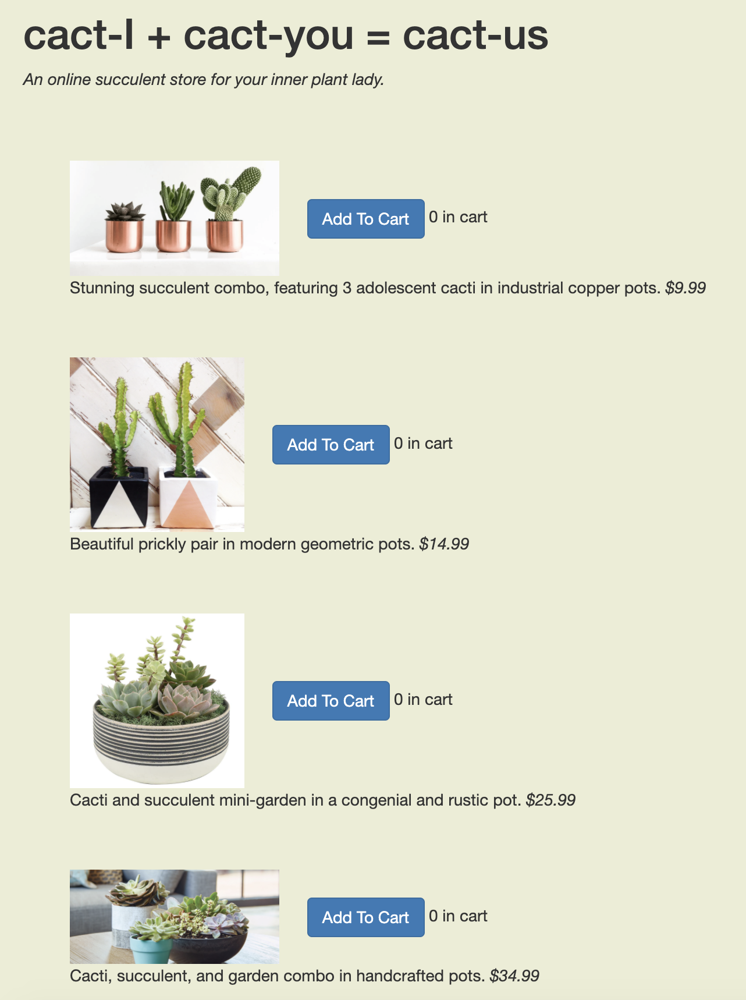
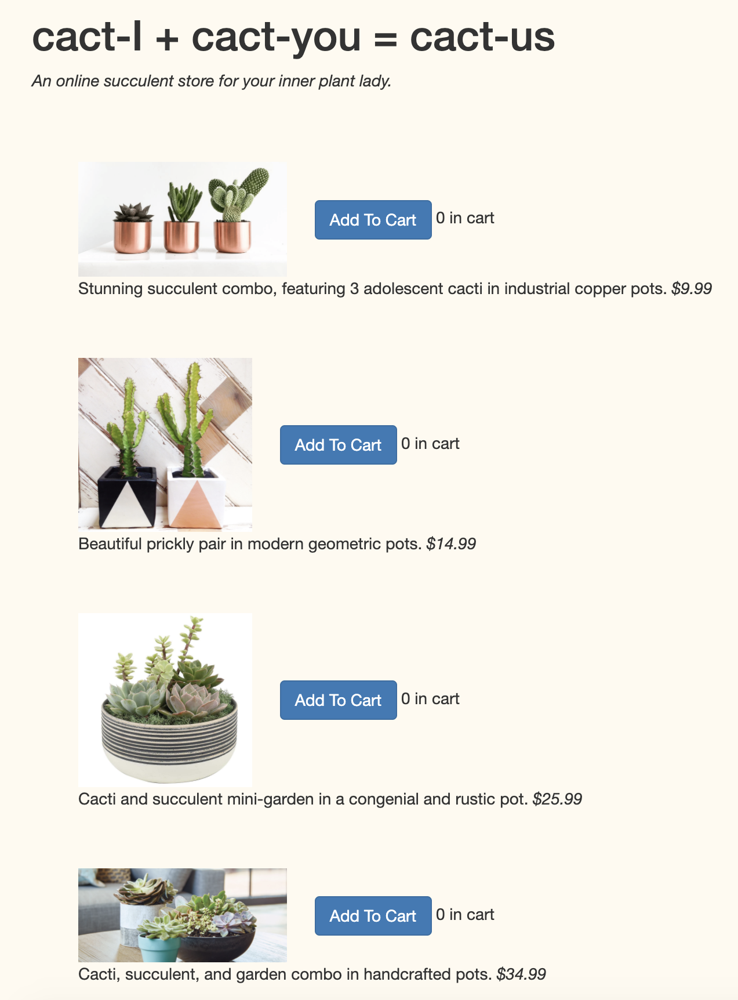
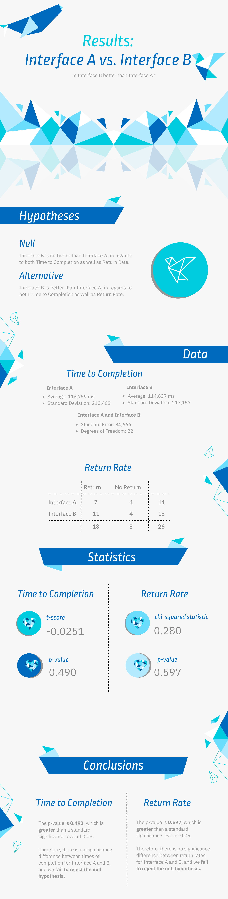

A/B Testing
Introduction
This is a project for CS1300: User Interface and Experience at Brown University, in which I perform an A/B test and statistical analysis to gather insight into two different UI designs.
Click here to view the test site, which will load version A 50% of the time and version B the other 50% of the time.
Screenshots
of each version are also shown below. The main difference between the two interfaces is the background color. Interface B has a lighter background color, which may make the text more readable, especially for those with lower quality vision.


Statistical Tests and Hypotheses
Metrics
I ran statistical tests for two metrics: Time to Completion and Return Rate.Time to Completion: the time it takes to complete the desired task (in this case, order cacti)
Return Rate: the number of times a user returned to the page
Hypotheses
Time to Completion
Null Hypothesis: Interface B is no better than Interface A in terms of time to completion.- i.e. there is no statistically signficant difference between the average completion times for interface A vs. B
- i.e. Interface B has a statistically significant lower average completion time than Interface A
- Reasoning: The lighter background color scheme may make it easier to read the prices of each cactus due to the greater contrast between background and text, thus making it easier to complete the task in a shorter amount of time.
Return Rate
Null Hypothesis: Interface B is no better than Interface A in terms of return rate.- i.e. there is no statistically signficant difference between the return rates for interface A vs. B
- i.e. Interface B has a statistically significant lower return rate than Interface A
- Reasoning: The lighter background color scheme may make it easier to read the prices of each cactus due to the greater contrast between background and text, thus making it easier to complete the task without having to return to the shopping page after checkout.
Data Collection
In order to collect my data, I deployed my test site on Heroku and sent the link to peers in the course, giving them the task of placing $150 worth of cacti in their carts. The Heroku link displays Interface A 50% of the time and Interface B the other 50% of the time, so each classmate would be randomly assigned an interface to complete the task. Therefore, I was able about to collect data from the Heroku logs that was appoximately 50% Interface A and 50% Interface B, and using the logs, I was able to use the page load time, click time, version, and session ID sections of the data to run statistical tests comparing the two interfaces.Conclusions and Takeaways
Infographic Displaying Conclusions
Takeaways
- Limitations
- The sample for this study was relatively small and lacked diversity. Therefore, it was not wholly representative of the general population.
- Due to the limited sample, the effect of background color may not have been fully explored, since most of the users were college students who are not likely to have visual limitations. A future study that includes older people and those with visual impairments may reveal more about the effect of using a lighter background color for readability.
- Design Principles
- In general, for most young users, background color in a design does not seem to have a substantial effect on usability, as long as it is acceptably readable.
- The standard list format with "Add to Cart" buttons seems to be generally straightforward for most users. Looking at the data, most users only took a few seconds to complete the task.